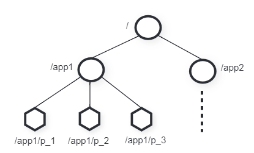

6.824 的第四篇论文是 ZooKeeper——用于协调分布式应用程序进程，同时提供消息群发、共享寄存器和分布式锁等集中式服务。
关于“ZooKeeper”这个项目的名字，考虑到之前内部很多项目都是使用动物的名字来命名的，Yahoo 的工程师希望给这个项目也取一个动物的名字。时任研究院的首席科学家 Raghu Ramakrishnan 开玩笑地说：“再这样下去，我们这儿就变成动物园了！”此话一出，大家纷纷表示就叫动物园管理员吧一一一因为各个以动物命名的分布式组件放在一起，Yahoo 的整个分布式系统看上去就像一个大型的动物园了，而 Zookeeper 正好要用来进行分布式环境的协调一一于是，Zookeeper 的名字也就由此诞生了。
协调服务
ZooKeeper 采用的协调形式有：配置、组成员、领导者选举和锁。由于实现了更强大的原语的服务可以用来实现不那么强大的原语，ZooKeeper 不再在服务端实现特定原语，而是公开一个 API，令开发者实现自己的原语，为协调提供灵活性。
ZooKeeper 在设计 API 时避免了阻塞原语，转而实现简单的无等待数据对象，同时也需要保证所有操作按客户端顺序 FIFO 以及可线性化的写入。
ZooKeeper 服务由一组使用 Replicate 的服务器组成（实际上有点像 Raft），同时利用简单的管道架构来实现高吞吐和低延迟——既能以 FIFO 顺序从单个客户端执行操作，又能使其能够异步提交操作。
为了保证更新操作满足线性化，ZooKeeper 采用基于领导者的原子广播协议 Zab；读取操作在本地处理，无需排序。
ZooKeeper 使用监视机制使客户端能够缓存数据，同时在给定数据对象更新时得到通知。
Znode
ZooKeeper 向其客户端提供一组数据节点(znode)的抽象，这些节点根据分层名称空间进行组织。如下图：

所有 znode 都存储数据，且除了临时节点(ephemeral znode)外的所有 znode 都可以有子节点。
有以下两种 znode：
- Regular：显式创建和删除。
- Ephemeral：创建后，或显示删除，或在会话终止时自动删除。
创建 znode 时，客户端可以设置一个 SEQUENTIAL 标志，这种 znode 具有全局单调增的值。
ZooKeeper 实现监视(watch)机制允许 client 及时接收数据更改通知，这个通知是一次性的，一旦触发或会话关闭，它们就会失效。
数据模型：本质上是一个具有简化 api 且只有完整数据读写的文件系统，或是具有分层 key 的 key-value 表。分层命名空间对于为不同应用程序的命名空间分配子树以及分配访问权限很有用。事实上，znode 的设计并非为了一般的数据存储，而是提供一个到客户端应用程序映射的抽象，通常对应于用于协调目的的元数据，如一些可用于元数据或分布式计算中的配置信息。
会话：client 连接到 ZooKeeper 并启动会话，用于标识 client。
客户端 API
create(path, data, flags)
创建一个路径名为 path 的 znode，并将 data 存储在其中，返回该 znode 的名称。flag 代表 znode 类型。
delete(path, version)
若 path 上的 znode 版本号等于 version，则将其删除。
exists(path, watch)
若 path 上的 znode 存在，则返回 true；反之返回 false。watch 使得客户端在该 znode 上设置一个监视器。
getData(path, watch)
返回 path 上 znode 关联的数据和元数据。若 znode 不存在，则不设置监视器。
setData(path, data, version)
若 path 上的 znode 版本号等于 version，则将 data 写入。
getChildren(path, watch)
返回 path 上 znode 的子节点集合。
sycn(path)
等待所有未完成的更新，path 没啥用。
以上 api 都提供了同步和异步版本，若
version = -1，则不进行版本检查。
ZooKeeper 保证
线性化写入：所有更新 ZooKeeper 状态的请求都是可序列化的，并且服从优先级。
FIFO 客户端顺序：所有请求都按照客户端发送的顺序执行。
要实现这两个保证，需要选出一个领导者来指挥工作进程。而当一个新的领导者接管系统时，它必须修改配置，然后通知其它进程。这样的话，需要满足以下两点：
- 领导者在修改配置时，其它进程无法使用正在被修改的配置；
- 若领导者在完全修改完配置前崩溃，则其他进程无法使用这一未完全更新的配置。
ZooKeeper 使用 ready znode 来满足上述约束，其他进程仅在 ready 存在期间使用配置。领导者通过删除 ready、更新配置 znode 和创建 ready 来更改配置。若一个进程看到了 ready znode，它必能看到新领导者所做的所有配置修改；若领导者在创建 ready 前崩溃，则其他进程就知道配置尚未完全更新完毕，也不会使用该配置。
如果一个进程在新领导者修改配置前看到 ready，而在更改配置时读取配置，则会产生问题。为了解决这一问题，采用 watch 机制，即客户端会在读取任何新配置前收到更新通知。
ZooKeeper 放弃了线性一致读，使得读请求能够分布在副本上，以提高性能。但由于写请求是线性化的，而且任何一个客户端的请求都会按照其指定的顺序进行，故所有写请求都是按客户端确定的顺序执行的，且每个读请求必然要在某个特定的 Log 点执行，即如果日志没有到这个点，它不会执行读请求，同时后续读请求必须在不早于当前读请求的位置进行。从而ZooKeeper 也能保证它（定义）的一致性。
ZooKeeper 还有以下两个保证：
- 活跃性：若大多数 ZooKeeper Server 处于活跃状态，则服务可用。
- 持久性：若 ZooKeeper Server 成功响应了更改请求，只要多数服务器最终能恢复，则该更改就会持续存在。
原语
配置管理
配置存储在 znode \(z_c\) 中，进程通过读取 \(z_c\) 并通过 watch 标志来获取配置更新通知。
会合
将 master 信息放在 zonode \(z_r\) 中，以便 worker 寻找。
组成员关系
当组成员进程启动时，会在一个指定的 znode \(z_g\) （用以表示组）下创建一个临时子 znode，该子 znode 存放进程信息。若进程结束，则该子 znode 自动删除。故可通过 \(z_g\) 来获取该组的所有组成员信息。
简单锁
锁文件——最简单的实现：为了获取锁，client 会尝试创建 ephemeral znode，若成功则持有锁；若 znode 存在，则说明有其它 client 正在持有锁，设置 watch 后进入等待状态，一旦该 znode 删除，则会再次尝试获得锁。
这个策略会受到羊群效应(Herd Effect)的影响：若有很多客户端在等待获取锁，即便只有一个客户端可以获取锁，当锁被释放时，所有客户端都会尝试获得锁，就像羊群一样阻塞着。当有 \(n\) 个客户端在等待时，最坏情况下需要 \(O(n^2)\) 的尝试。
无羊群效应的简单锁：所有请求锁的 client 排成一排，按请求到达的顺序链式获得锁。每个 client 按照
SEQUENTIAL在 \(z_l\) 下创建 ephemeral znode，并获取 \(z_l\) 所有子节点的信息。当且仅当其序号为 \(z_l\) 所有子节点的序号中最低时，获得锁；否则，client 会 watch 前一个 znode。释放锁时只需要删除对应 znode 即可。Lock1
2
3
4
5
6n = create(l + '/lock-', EPHEMERAL | SEQUENTIAL)
C = getChildren(l, false)
if n is lowest znode in C, exit
p = znode in C ordered just before n
if exists(p, true), wait for watch event
goto 2Unlock1
delete(n)
前一个 znode 消失后还需要获取 \(z_l\) 所有子节点的信息，并检查自己的序号是否为最小，因为有可能只是前一个 znode 崩溃，而有更小的 znode 持有锁。
这样一来，每次释放锁时只会唤醒一个进程，从而将复杂度降为 \(O(n)\)
读写锁：写锁同上。读锁需要等待前面的写锁全部结束后才能持有。
Write Lock1
2
3
4
5
6n = create(l + '/write-', EPHEMERAL | SEQUENTIAL)
C = getChildren(l, false)
if n is lowest znode in C, exit
p = znode in C ordered just before n
if exists(p, true), wait for watch event
goto 2Read Lock1
2
3
4
5
6n = create(l + '/read-', EPHEMERAL | SEQUENTIAL)
C = getChildren(l, false)
if no write znodes lower than n in C, exit
p = write znode in C ordered just before n
if exists(p, true), wait for watch event
goto 3双屏障：使客户端能够同步计算的开始与结束。用 znode \(b\) 表示 ZooKeeper 中的屏障。每个进程在准备开始时，会在 \(b\) 下注册——创建一个子 znode，而在准备退出时注销——删除该子 znode。当 \(b\) 的子节点数超过一定数量后，所有注册的进程都会真正开始计算，只有当 \(b\) 的所有子节点都被删除时，进程才会真正退出。这两点都可通过 ready 来实现。
总结
ZooKeeper 是一个容错的，通用的协调服务。